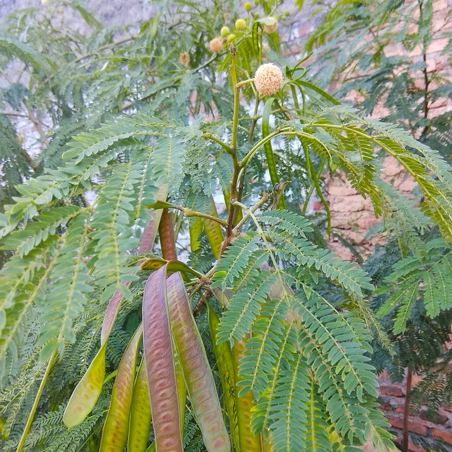

सुबबूलSubabul
Leucaena leucocephala · Fabaceae · FLR-0045

- Scientific name
- Leucaena leucocephala (Lam.) de Wit
- Family
- Fabaceae
- Hindi
- सुबबूल
- Status here
- invasive
- IUCN
- not evaluated
When to look कब देखें
Present all year.
सुबबूल / Subabul
Leucaena leucocephala (Lam.) de Wit — Fabaceae
सुबबूल (सफ़ेद लीडट्री) — उत्तर प्रदेश के सड़क के किनारों, रेलवे पटरियों और परती भूमि (wastelands) पर तेजी से फैलने वाला एक छोटा से मध्यम आकार का विदेशी आक्रामक (invasive) पेड़ है। यह मूल रूप से मध्य अमेरिका और मैक्सिको का निवासी है, जिसे 1980 के दशक में सामाजिक वानिकी (social forestry) और चारे के लिए भारत लाया गया था। इसके पत्ते द्विपक्षीय (bipinnate compound leaves) होते हैं और इसमें सफेद-क्रीम रंग के गोल गेंद जैसे फूल (globular flower heads) आते हैं। इसके फल चपटे, भूरे रंग की फलियाँ (flat brown pods) होते हैं जो गुच्छों में लटके रहते हैं। यद्यपि यह बहुत तेजी से बढ़ता है और हवा से नाइट्रोजन सोखता है, लेकिन यह एक आक्रामक खरपतवार बन चुका है जो स्थानीय वनस्पतियों को नष्ट कर देता है। इसके पत्तों में मीमोसिन (mimosine) नामक विषैला अमीनो एसिड होता है, जिसके अधिक सेवन से गाय, भैंस और बकरियों के बाल गिरने लगते हैं और थायराइड ग्रंथि को नुकसान पहुंचता है।
Quick Identification त्वरित पहचान
| Feature | Description |
|---|---|
| Form | Small tree or large shrub (5–10 m); trunk is slender with a loose, open, branched crown |
| Leaves | Bipinnate compound leaves (10–25 cm long) with 4–9 pairs of pinnae, each pinna carrying 11–17 pairs of small, pointed leaflets |
| Flowers | Globular, white to cream-coloured flower heads (1.5–2.5 cm diameter) that look like fuzzy powder-puffs |
| Fruit | Flat, straight, thin, translucent green pods turning paper-brown when ripe (10–15 cm long), hanging in dense clusters |
| Spines | Entirely spineless. The branches lack thorns (unlike native acacias) |
| Seeds | Small, oval, shiny brown, flat seeds (15–20 per pod) that rattle inside dry pods |
Field tip: Look for an acacia-like tree without any thorns, carrying large clusters of thin, flat brown pods and white fuzzy ball-like flowers on the branches.
Morphology आकारिकी
Biometrics (typical measurements for specimens in Basti district):
| Feature | Measurement |
|---|---|
| Tree height | 5–10 m |
| Leaf length | 10–25 cm |
| Leaflet length | 9–15 mm; Width: 2–3 mm |
| Flower head diameter | 1.5–2.5 cm |
| Pod dimensions | 10–15 cm length; 1.5–2 cm width |
Bark: Light grey to greyish-brown, smooth with prominent orange lenticels (pores) when young, becoming slightly fissured on older trunks.
Root system: Deep taproot with abundant lateral roots carrying pinkish, nitrogen-fixing bacterial nodules (Rhizobium).
Associated Species / Interactions सहजीवी संबंध
Invasive competitor.
- Local exclusion: By growing extremely fast and producing thousands of seeds, it forms dense monospecific stands that block sunlight, preventing native seedlings (like Babool
[FLR-0047]and Ber[FLR-0046]) from germinating. - Animal toxicity: Contains mimosine, a toxic non-protein amino acid. While ruminants (cows, goats) can tolerate moderate amounts due to rumen bacteria, non-ruminant animals (horses, pigs, poultry, and rabbits) suffer from hair loss, excessive salivation, and thyroid damage if fed Subabul.
- Seed consumption: Some seed-eating birds and rodents consume the seeds, helping spread the invasive plant along pathways.
Life Cycle / Phenology जीवन चक्र
- Fast growth: Saplings grow up to 3–5 metres in a single year, flowering within 6–8 months from germination.
- Flowering & Fruiting: Produces flowers and pods year-round, peaking in March–May and September–November.
- Seed production: A single mature tree produces over 10,000 seeds annually. The dry pods split open on the tree, dropping seeds that remain viable in the soil for years.
Pests and Diseases कीट और रोग
- Subabul Psyllid: The jumping plant louse (Heteropsylla cubana) is a major pest that sucks sap from young shoots, causing defoliation and stunted growth.
- Root Rot: Fungal infections (Ganoderma spp.) can rot the roots of older trees in waterlogged soils.
Agricultural / Human Relevance कृषि प्रासंगिकता
Agroforestry benefits versus ecological damage.
- Historical promotion: Initially introduced by forest departments for rapid afforestation, green fodder, and fuel wood. Its rapid nitrogen-fixing ability improves poor soils temporarily.
- Feed caution: Green leaves are harvested as high-protein fodder for cattle and goats, but must be mixed with other grasses (never exceeding 20–30% of the total diet) to prevent mimosine poisoning.
- Invasive threat: Today, its negative ecological impacts outweigh the benefits. It has escaped plantations and overrun village commons (gauchar land), reducing grazing area for local livestock as it replaces nutritious native grasses.
Traditional and Ethnobotanical Use
- Note on traditional use: As a recently introduced exotic species, Subabul lacks historical references in classical Ayurvedic texts. Local traditional uses are modern adaptations:
- Wound paste: Ground leaf paste is applied by some farmers onto skin injuries of cattle to prevent infection (exhibits mild antibacterial activity).
- Firewood crop: The branches are pruned continuously by villagers as a source of cheap firewood.
- Green manure: The leaves are cut and incorporated into soil as a fast-decomposing organic green manure to boost nitrogen levels in vegetable plots.
Expected Locally स्थानीय रूप से अपेक्षित
Not a field record. Written from published accounts for eastern Uttar Pradesh. No confirmed local sighting yet — if you have seen it, that is what the atlas needs.
अभी तक स्थानीय पुष्टि नहीं। यह विवरण प्रकाशित स्रोतों से है, किसी अवलोकन से नहीं।
Extremely common along the National Highway 28 margins, railway tracks, and degraded fields around Basti town and Harraiya block. It forms dense, tall thickets in neglected suburban plots, choking out native vegetation.
Distribution वितरण
Global range: Native to southern Mexico and Central America. It has been introduced to more than 100 countries across the tropics for forestry and fodder and is now listed among the "100 of the World's Worst Invasive Alien Species."
In India: Naturalized and invasive in almost all states, particularly common in plains and degraded drylands.
In Uttar Pradesh: Abundant along roadsides, canal banks, and wastelands across the state.
In Basti district / eastern UP: Highly common invasive resident in all blocks.
Research Questions शोध प्रश्न
- What is the density of Leucaena leucocephala stands along Basti's highways, and how has it changed over the last decade? / बस्ती के राजमार्गों के किनारे सुबबूल के पेड़ों के फैलाव की दर क्या है, और पिछले दस वर्षों में इसमें क्या बदलाव आया है?
- Does the mimosine content in the leaves of Leucaena leucocephala vary significantly between the hot dry summer and the wet monsoon in Basti? / गर्मी के शुष्क मौसम और मानसून की बारिश के दौरान सुबबूल के पत्तों में मीमोसिन की मात्रा में क्या अंतर आता है?
- What is the regeneration rate of native understory plants after clearing a dense patch of Leucaena leucocephala?
- How do local goat herds respond to mimosine toxicity when grazed exclusively in Subabul-dominated wastelands?
- Can school children compare the seed pods of Subabul (
[FLR-0045]) and native Babool ([FLR-0047]) to identify the visual differences? — A simple comparison exercise.
Similar Species मिलती-जुलती प्रजातियाँ
| Species | Key Difference | हिंदी |
|---|---|---|
Vachellia nilotica (Babool [FLR-0047]) | Native. Possesses long, sharp white spines; flowers are bright yellow globes (not white); pods are thick, constricted between seeds (necklace-like). | देशी बबूल — कांटेदार शाखाएं, पीले फूल, माला जैसी फलियां |
Albizia lebbeck (Siris [FLR-0048]) | Much larger tree; leaves have larger leaflets; flowers are large cream-green powder-puffs; pods are much wider and papery. | शिरीष — बड़ा आकार, बड़े पत्ते, चौड़ी फलियां |
Acacia auriculiformis (Earleaf Acacia [FLR-0049]) | Leaves are modified into curved, flat, sickle-shaped phyllodes (no compound leaflets); flowers are yellow spikes; pods are highly twisted. | बंगाली बबूल — हंसिया जैसे पत्ते, मुड़ी फलियां |
Taxonomy & Classification वर्गीकरण
Original description. Jean-Baptiste Lamarck described the species as Mimosa leucocephala in 1783 in Encyclopédie Méthodique, Botanique (Vol. 1, p. 13). It was later moved to the genus Leucaena by Hendrik de Wit in 1961 in Taxon (Vol. 10, p. 54). The genus name Leucaena comes from the Greek leukos (white), referring to the white flower heads. The specific name leucocephala combines the Greek leukos (white) and kephale (head).
Subspecies. The invasive variety widespread in northern India is Leucaena leucocephala subsp. leucocephala.
Family and order placement. Placed in the order Fabales, family Fabaceae (legume family), subfamily Caesalpinioideae (formerly Mimosoideae), tribe Mimoseae.
Phylogenetic notes. The genus Leucaena contains approximately 24 species. Leucaena leucocephala is a tetraploid hybrid species that originated through natural hybridization between two diploid species (L. pulverulenta and L. lanceolata) in Central America.
IUCN status rationale. Not assessed (NE) by the IUCN Red List. As an aggressive global invasive weed with a population in the billions, it faces no conservation threats.
Photo Gallery फोटो गैलरी
References संदर्भ
- Lamarck, J. B. (1783). Encyclopédie Méthodique, Botanique. Panckoucke, Paris, Vol. 1, p. 13. [original description]
- Wit, H. C. D. de (1961). Typification and correct name of Leucaena leucocephala (Lam.) de Wit. Taxon, 10, 50–54.
- Hughes, C. E. (1998). Monograph of Leucaena (Leguminosae-Mimosoideae). Systematic Botany Monographs, Vol. 55.
- Yadava, P. S. (1990). Agroforestry Systems in India. ICAR Publications, New Delhi.
- Botanical Survey of India. State Flora Series: Flora of Uttar Pradesh. BSI, Kolkata.
- GBIF Occurrence Data — Leucaena leucocephala (2026). GBIF taxon key: 2970418.
Source file: species/flora/trees/subabul.md